{
"frames": 398,
"csv_rows_raw": 398,
"sampling_stride": 1,
"videos": [
"youtube_cal_oes_flood_prep_274d74.mp4"
],
"modes": [
"combined"
],
"active_tools": [
"detect_combined"
],
"altitudes_m": [
50.0
],
"frame_idx_range": [
0,
397
],
"mean_latency_ms": 45.36419597989949,
"std_latency_ms": 8.308405760365552,
"mean_fps": 22.749070351758796,
"std_fps": 4.105860208342921,
"mean_flood_ratio": 0.10357286432160803,
"mean_human_count": 0.864321608040201,
"lifecycle": {
"active_tool": "detect_combined",
"benchmark_mode": "combined",
"model_load_events": 1,
"model_reload_events": 0,
"clf_load_ms": 25.5,
"seg_load_ms": 44.56,
"human_load_ms": 1.03,
"model_load_total_ms": 71.1,
"unload_events": [],
"first_frame_latency_ms": 80.29,
"steady_latency_ms": {
"mean": 45.3,
"p50": 44.82,
"p95": 55.77,
"frames": 396
}
}
}
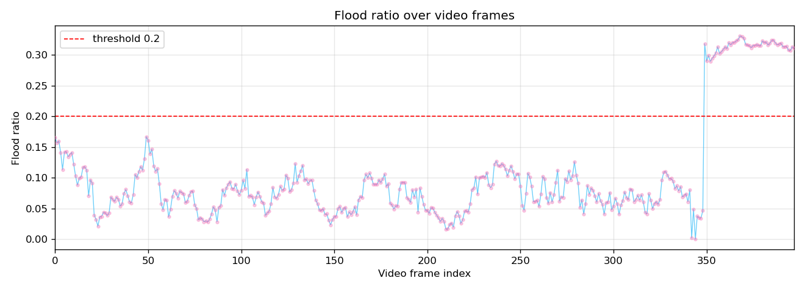
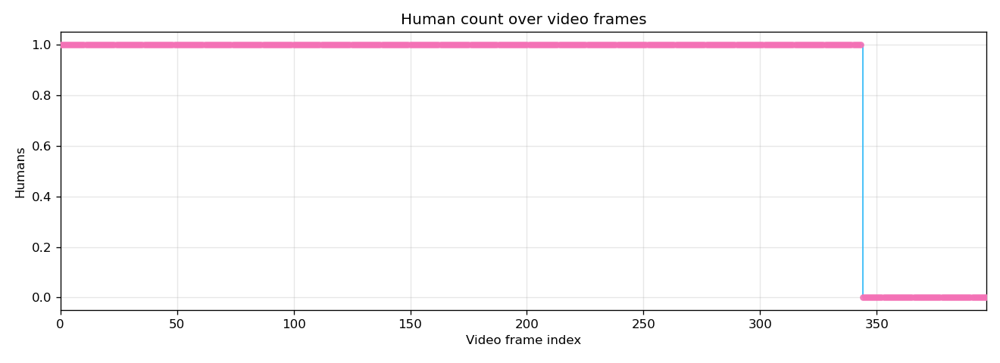
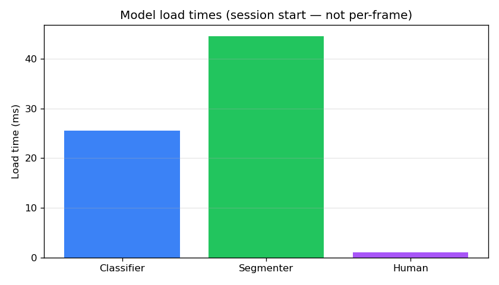
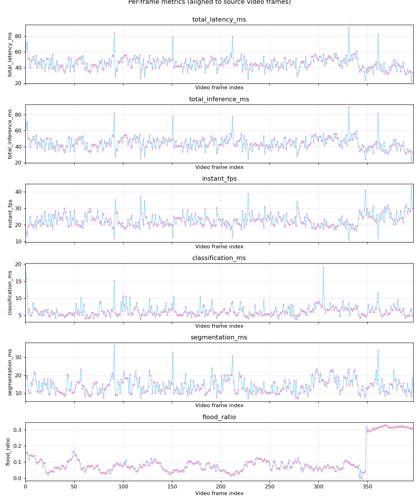
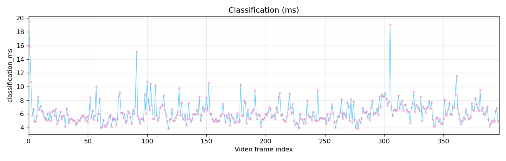
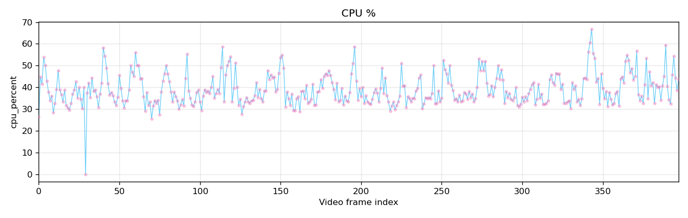
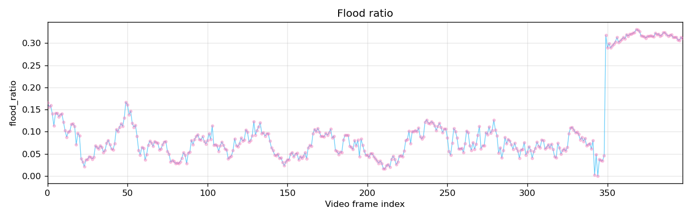
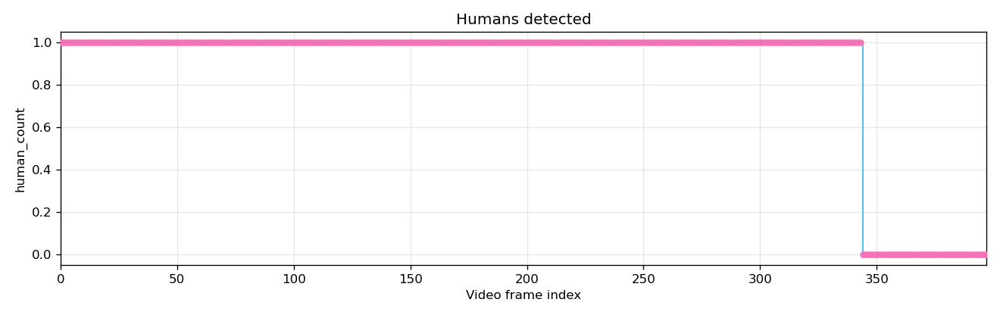
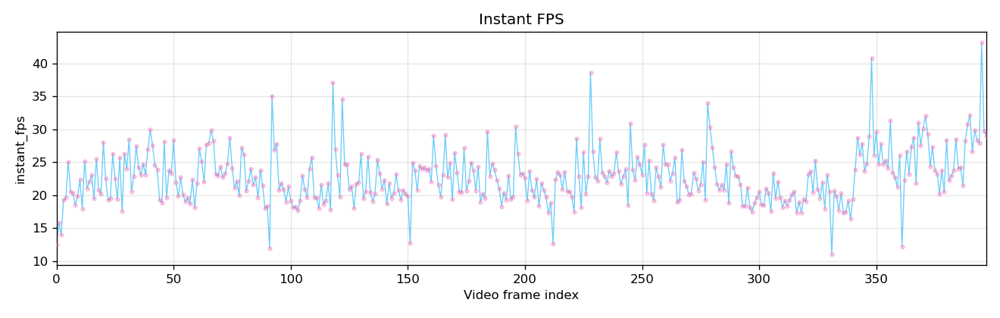
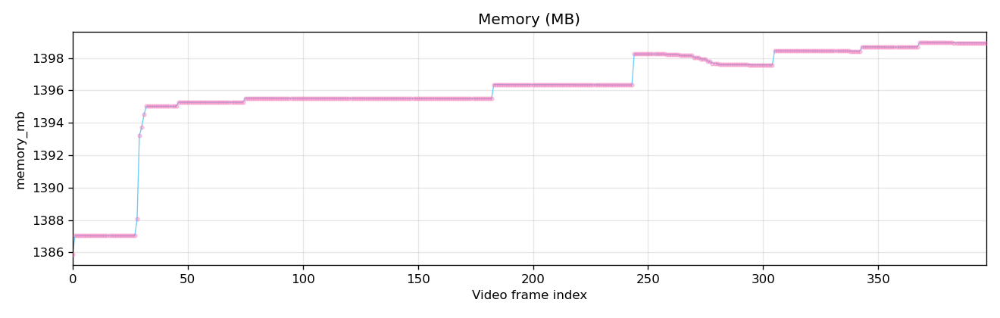
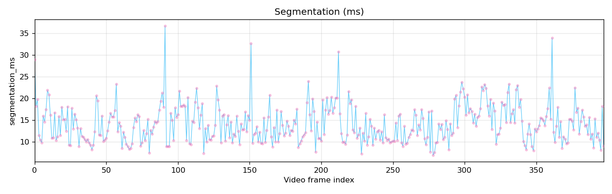
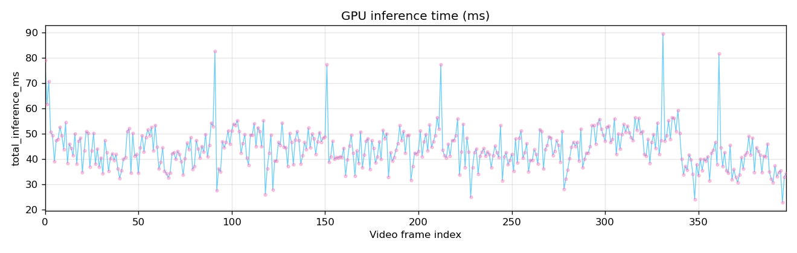
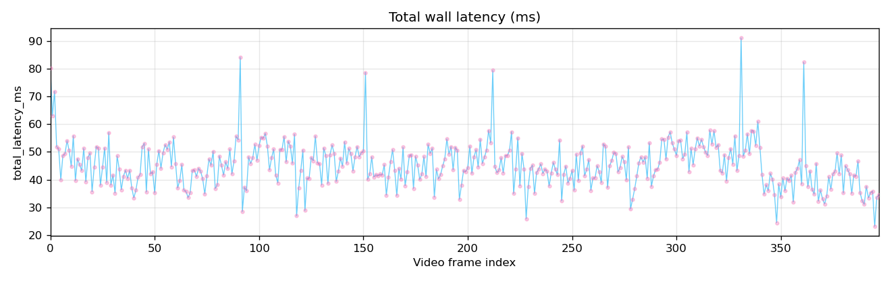
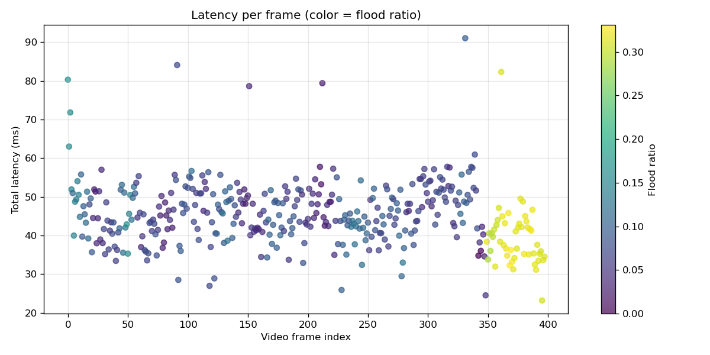